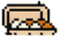
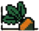
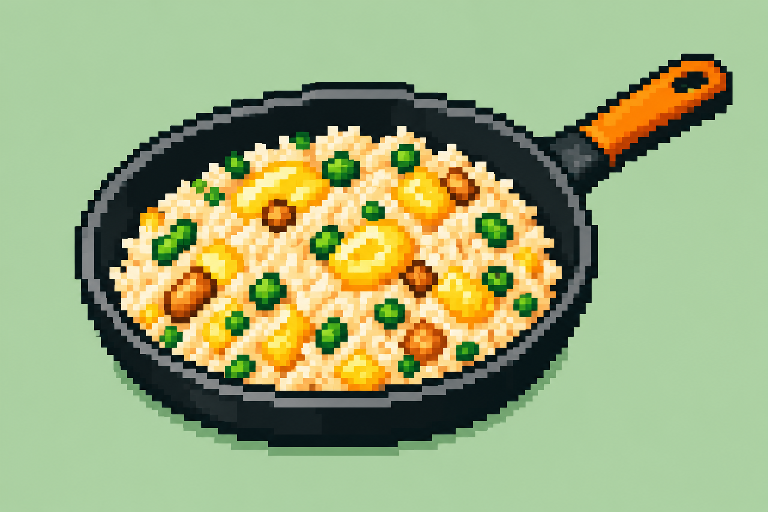

Використай продукти
Починай з того, що вже лежить у холодильнику, і знаходь для цього просту страву.
ПРОДУКТИ + БЮДЖЕТ = ВЕЧЕРЯ
Докуповуй у межах бюджету.
Прості рецепти з наявних продуктів.
Ти задаєш час і ліміт на докупку.
Без реєстрації · Можна з бюджетом 0 ₴






МЕНШЕ ВИТРАТ — МЕНШЕ ВІДХОДІВ
Починай з того, що вже лежить у холодильнику, і знаходь для цього просту страву.
Зазнач суму на докупку й одразу бач, чи вкладається рецепт у твій ліміт.
Короткі інструкції та знайомі інгредієнти допоможуть швидше перейти до вечері.
ТРИ ПРОСТІ КРОКИ
Вкажи, що вже є вдома.
Навіть 0 ₴ на докупку.
Подивись склад і витрати.
ПЕРЕВІРЕНІ ІДЕЇ ДЛЯ ВЕЧЕРІ

20 ХВ · 2 ПОРЦІЇ
Ситна страва з доступних продуктів. Орієнтовна докупка — 38 ₴.
Переглянути рецепт20 ХВ · БЕЗ ДОКУПКИ
Варіант, коли всі потрібні продукти вже є вдома.
Переглянути рецептПРО ПРОЄКТ
«Холодильник студента» — навчальний проєкт про прості страви з продуктів, які вже є вдома. Його ідея — допомогти швидко перейти від списку продуктів до рецепта, враховуючи бюджет на докупку.
ІНСТРУМЕНТИ ДЛЯ КУХНІ
Зміни кількість порцій — інгредієнти перерахуються автоматично. Познач те, що вже є вдома.
РИС ІЗ ЯЙЦЕМ ТА ЦИБУЛЕЮ
Базовий рецепт розрахований на 2 порції.
Введи число від 1 до 8. Кількість інгредієнтів оновиться автоматично.
Потрібно докупити
Цибуля, олія
ГОТУЙ РАЗОМ З ВІДЕО
Рис, гречка, паста й картопля — доступні продукти та зрозумілі страви на щодень.
Швидка вечеря з рису та яєць. Відкрити на YouTube ↗
Проста ситна страва з крупи й грибів. Відкрити на YouTube ↗
Паста з тунцем, олією та зеленню. Рецепт і відео від NV ↗
Три варіанти страви з доступної картоплі. Відкрити на YouTube ↗
ЗНАЙДИ ПРОДУКТИ ПОРУЧ
Перевір розташування магазинів, якщо для рецепта бракує кількох інгредієнтів.
ЧАС ПЕРЕВІРИТИ ХОЛОДИЛЬНИК
Додай продукти, задай бюджет і подивись, що можна приготувати сьогодні.